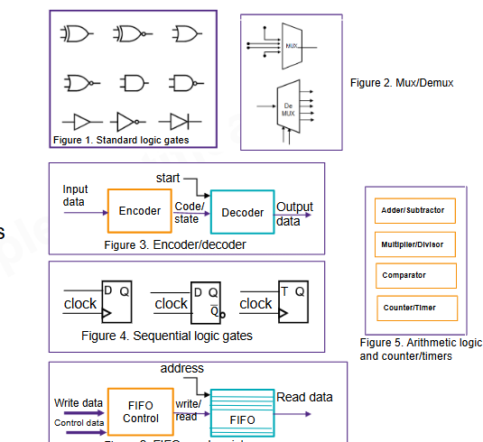
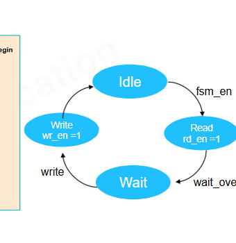
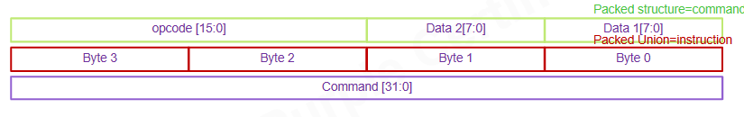

Mapa mental da aula
O primeiro cuidado é não estudar SystemVerilog como uma lista infinita de palavras novas. A linguagem junta três mundos que se encostam, mas não têm a mesma finalidade.
SystemVerilog
design sintetizável
modelagem de sistema
verificação/testbench
Essa separação explica quase todos os quizzes da aula. Uma interface pode fazer parte
de um design. Uma class normalmente pertence ao testbench. Uma mailbox
ajuda processos de verificação a se comunicarem. O arquivo ser .sv não torna tudo
sintetizável.
SystemVerilog como superset de Verilog
A aula reforça que SystemVerilog suporta os construtos e melhorias de Verilog 2005. Ele não é uma linguagem completamente separada: é uma evolução que preserva a base Verilog e adiciona recursos para design, modelagem e verificação.
Verilog 2005
+ tipos melhores
+ processos com intenção explícita
+ interfaces
+ structs/unions/arrays
+ assertions/coverage/classes
= SystemVerilogmodule and2 (
input logic a,
input logic b,
output logic y
);
assign y = a & b;
endmodulePor que isso importa no ambiente do professor?
Um makefile ou filelist pode compilar .v, .sv e .svh.
O que decide o papel do arquivo não é só a extensão. Você precisa saber se ele está no RTL,
no testbench, em includes, em interfaces ou em pacotes de verificação.
Nem tudo é sintetizável
O quiz mais importante da aula diz: "All SystemVerilog constructs are synthesizable". A resposta é falsa. SystemVerilog é maior que o subconjunto de RTL sintetizável.
| Grupo | Exemplos | Uso típico |
|---|---|---|
| RTL sintetizável | logic, always_ff, always_comb, enum, packed struct | Design que vira hardware |
| Verificação | class, mailbox, semaphores, randomização, coverage | Testbench e ambientes como UVM |
| Modelagem | OOP, processos dinâmicos, modelos abstratos | Representar sistema sem necessariamente virar circuito |
Behavioral, RTL e estrutural
A aula diferencia níveis de abstração. Behavioral descreve comportamento; RTL descreve transferência entre registradores; estrutural descreve blocos conectados. Para seu projeto, o centro é RTL.
behavioral: o que o sistema faz
RTL: registradores + lógica combinacional + controle
structural: instâncias, portas, células e conexõesO fluxo de síntese fica assim:
RTL design -> synthesis tool -> design netlistO alvo ainda é hardware digital
Um slide revisa blocos básicos: portas, muxes, decoders, flip-flops, aritmética, FIFOs, arrays de registradores e FSMs. Esse slide é visualmente útil porque lembra que a linguagem precisa mapear para estruturas de hardware.

`logic`, 2 estados e 4 estados
SystemVerilog simplifica muito a vida em relação ao antigo par mental wire/reg.
O tipo logic é de 4 estados: 0, 1, X e Z.
Já bit é de 2 estados: 0 e 1.
logic valid;
logic [31:0] data;
bit model_enable;
int count;
Para RTL comum, logic costuma ser uma escolha clara para sinais internos e portas
procedurais. Mas tipo não substitui disciplina: largura, reset, atribuição completa e estilo
de processo ainda determinam se o RTL é bom.
`always_comb`, `always_ff` e `always_latch`
Em vez de usar sempre always genérico, SystemVerilog permite declarar a intenção do bloco.
| Construto | Intenção | O que procurar na revisão |
|---|---|---|
always_comb | Lógica combinacional | Atribuição completa, sem memória acidental |
always_ff | Registradores/FFs | Clock/reset claros, nonblocking assignments |
always_latch | Latch intencional | Uso realmente desejado, não acidente |
always_comb begin
y = a & b;
end
always_ff @(posedge clk or negedge rst_n) begin
if (!rst_n) q <= '0;
else q <= d;
endFSM com intenção explícita
O slide de FSM conecta estado, transição e saída. SystemVerilog permite escrever isso de forma
muito mais legível usando typedef enum, always_ff e always_comb.

`unique` e `priority`
unique e priority comunicam intenção para simulador, síntese e ferramentas formais.
`unique`
Use quando as alternativas deveriam ser exclusivas e a cobertura dos casos importa.
unique case (sel)
2'b00: y = a;
2'b01: y = b;
2'b10: y = c;
2'b11: y = d;
endcase`priority`
Use quando a ordem das condições é parte do comportamento.
priority if (irq0) grant = 4'b0001;
else if (irq1) grant = 4'b0010;
else if (irq2) grant = 4'b0100;
else grant = 4'b0000;Interfaces
interface agrupa sinais relacionados. Esse é o recurso que o quiz aponta como também
sintetizável quando usado dentro das regras aceitas pelo fluxo.
interface bus_if;
logic valid;
logic ready;
logic [31:0] data;
endinterfaceA ideia é representar um protocolo de forma coesa, em vez de espalhar dezenas de portas soltas.
Cuidado de fluxo
O suporte de síntese e as regras de estilo variam por ferramenta. Em um projeto de disciplina, vale seguir o padrão do professor e verificar se a filelist/makefile aceita o uso de interfaces.
Conexões implícitas: `.name` e `.*`
SystemVerilog reduz a verbosidade de instanciar módulos.
alu u_alu (
.clk,
.rst_n,
.a,
.b,
.y
);
O .* conecta automaticamente portas a sinais de mesmo nome, mas deve ser usado com
disciplina. Menos linhas podem facilitar escrita e dificultar revisão.
.name costuma ser um bom
meio-termo entre clareza e menos repetição.
Structs, unions e arrays
O slide de organização de dados mostra uma palavra de 32 bits dividida em campos. Esse é um
caso perfeito para packed struct.

typedef struct packed {
logic [15:0] opcode;
logic [7:0] data2;
logic [7:0] data1;
} command_t;
command_t cmd;if (cmd.opcode == OP_ADD) begin
result = cmd.data1 + cmd.data2;
endRecursos de verificação
OOP, classes, mailboxes, semaphores, constrained random, coverage e assertions preparam o terreno para verificação moderna. Eles são essenciais para testbench, mas não devem ser confundidos com RTL.
class bus_item;
rand bit [31:0] addr;
rand bit [31:0] data;
endclassQuizzes explicados
Falso. A linguagem inclui RTL, modelagem e verificação.
interface. Classes e mailbox são típicas de verificação.
RTL design, design netlist.
OOP.
Verilog 2005.
O que levar para o projeto
- Use SystemVerilog para aumentar clareza, não para misturar RTL e testbench.
- Prefira
always_ffpara registradores ealways_combpara lógica combinacional. - Use
typedef enumpara FSMs; fica melhor para revisão e waveform. - Use
packed structquando um barramento tiver campos reais de protocolo. - Trate
interfacecomo agrupamento de sinais, mas respeite o fluxo de síntese disponível. - Mantenha classes, mailboxes, randomização e coverage no mundo da verificação.
Base Markdown: aula didática, texto extraído, cobertura slide a slide.